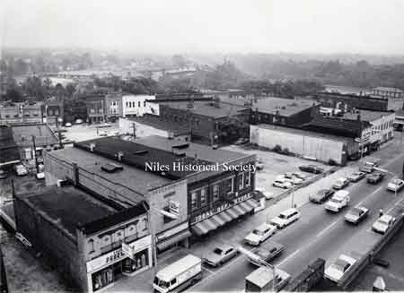
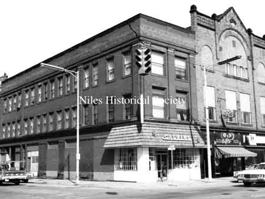
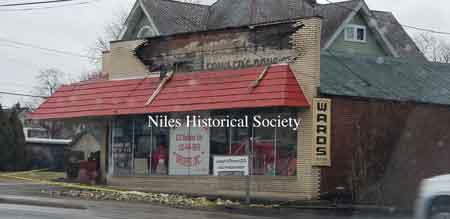
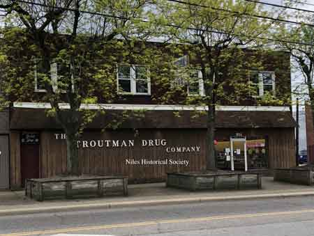
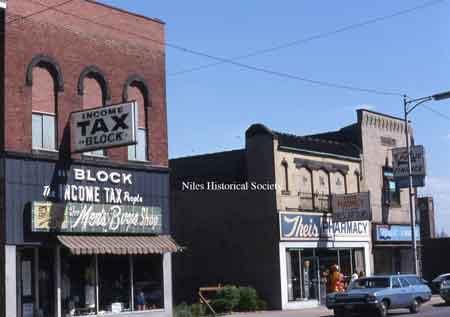
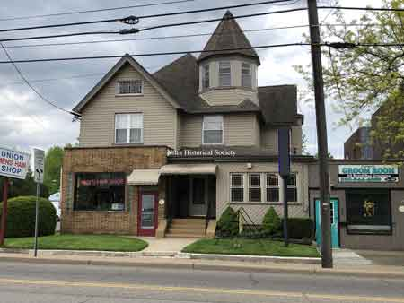
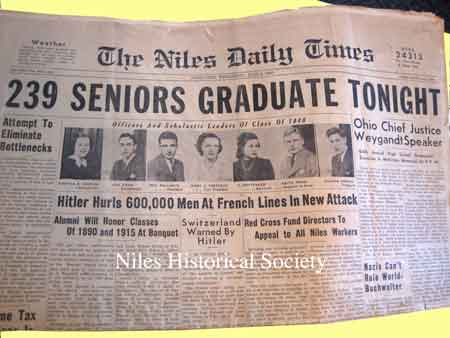

Ward-Thomas Museum


History of Niles Drugstores
Ward — Thomas
Museum
Home of the Niles Historical Society
503 Brown Street Niles, Ohio 44446
Click here to become a Niles Historical Society Member or to renew your membership
Click on any photograph to view a larger image, click on image again to zoom into photograph.
|
|
History
of Niles Drugstores. 1924- There were 6 pharmacies in
Niles: Let’s take a look at those
3 drugstores.
|
|
| |
||
L: Ferguson & Kennedy Drug Store in the 1890’s. It later became McDowell’s, who was a son-in-law of Mr. Ferguson. PO1.2046 R: Seating booths for
the soda fountain in Ferguson & Kennedy’s
Drug Store. Located on the “doughnut” where the
safety service complex is now located. The Victrola in the center
was also sold in the store. Donated by Mrs. James Youll
who was a phamacist for Mr. McDowell when Mr. Ferguson
became the mayor of Niles. PO1.2047 |
||
| |
||
|  |
Ward’s Pharmacy existed before 1908 and future entities moved several times- from 11 South Main Street to 13 then 15 and finally-41 South Main Street. It was known as Reznor’s Drugs at least by 1927. Then in 1953, Ray Vaughn bought it from Jake Small, and it was re-named Vaughn’s Pharmacy. In October 1971, it was purchased by Ron Theis, and named Theis Pharmacy. A new building was constructed at 41 South Main in October 1976 (current location of Stoneyard). In October 1985, this pharmacy was bought by Gary Kuszmaul, who named it Kuszmaul’s Pharmacy and it was permanently closed in November 2006. |
|
| |
||
|  |
Calvin’s at 2 North Main began in 1914 by Harry T. Calvin. From 1934 til 1961, it was owned by James Jewell. Sam Woodcock bought it in 1951 and owned it until 1958, when it was purchased by Rudy Prinz. In 1979, it was moved to a new building across the street to 1 North Main. Prinz sold it in 1983 to Jeff Scheumann and Glenn Fernandez from Cleveland. Calvin’s remained with the same name throughout the years. It was permanently closed in August 1986. |
 Calvin’s Drug Store at 1 North Main Street. |
 533 Robbins Avenue. |
1926-April- Park’s Pharmacy was purchased from H.T. Calvin by brothers Frank and Robert Fowler who brought in Paul Elder one year later. This pharmacy was located at 533 Robbins Avenue. The former Park’s Pharmacy building at 533 Robbins would become in succession The Robbins Avenue Meat Market- Robbins Avenue Super Market-Morabito’s Market in 1949, then Ward’s Costume Shop. The top brick front of 533 Robbins fell apart during a windstorm, March 2019, and revealed the old Fowler Drugs sign on the wood beneath the bricks. |
|
| |
||
 Interior Fowler & Elder Drug Company, 1931. |
1929-May- The Fowlers built a new brick building at 501 Robbins Avenue-corner of Robbins and Cedar, finding they needed more space. On the second floor were 3 doctors and in the basement a barber shop. The first floor was occupied—half by Fowler and Elder’s Drug Store and half by Tom Anderson’s Deluxe Market. Pictured are Paul Elder and Pete DeChristopher who worked at the pharmacy until 1974. The basement barber shop, called Modern Sanitary Barber Shop (hair thinned for 40 cents) was owned by Phillip Melillo. He later moved to his home next door and it was eventually taken over by his son, Frank, then by Frank’s nephew (Phillip’s grandson) Michael. The 3 doctors with offices upstairs were S.W. Boesel, Swaney, and Knox. Dr. Boesel would be there through the 1940’s eventually becoming Niles' Health Commissioner. Dr. Boesel's office space would later be occupied by Thomas Ingledue, Architect. |
|
In 1929, Fowler and Elder placed ads selling among other things-a box of 1lb Mary Lincoln Candy for 70 cents, pack of cigarettes 15 cents or 2 for a quarter, or $1.15 a carton, a “beautiful” golf set for $9.19 (with 3 free balls), and free balloons for the kiddies. At the market next door, you could buy eggs for 20 cents a dozen or beans 4 cans for a dollar or bread-2 loaves for 15 cents or oranges 25 cents for 3 dozen-the good old days ? Remember—this was 5 months before the stock market crash—the depression was coming! |
||
The Fowler name was continued for a while, then became Woodcock’s Drug Store. In February 1951, Sam Woodcock also acquired Calvin’s Drug Store. In April, 1955, Willis Troutman, coming
from Tarentum, Pennsylvania, bought the Woodcock store on Robbins
Avenue, soon renaming it Troutman’s Drug Store, and In July, 1972, Willis sold the store to his son, Barry Troutman, and James Tallman who would also start up The Medicine Man Pharmacy located at 1150 Niles-Cortland Road in Dr. Carl Gillette’s new building. It stayed in operation from 1978 until 1997. In February, 1983, Barry Troutman died, and James and Dawn Tallman became sole owners, keeping the name-The Troutman Drug Company. It remained under the same ownership until November, 2017, when it was purchased by Joseph N. Gioiello, and is currently the only independent pharmacy in Niles, and one of a handful in Trumbull County. The Eastern half of the first floor , occupied by Tom Anderson changed hands in January 1948, being sold to Barney and Gilbert Macali and being renamed Macali’s Deluxe Market. Macali’s would move in 1957 to 353 Robbins Avenue (now Family Dollar) then to their present location at 48 Vienna Avenue (former A & P) in May 1979. |
||
 Troutman Drug Store, 501 Robbins Avenue. |
The building at the corner of Robbins and Cedar was built on the site if the former W.R. Gilbert home, a historic landmark. It was of steel construction and used Niles fire bricks and built by the Arthur B. Neidlinger Construction Company. It was begun in 1928 and finished in 1929 just months before the “New” Niles Bank Building went up (called the first “mini” skyscraper in Niles.) The linoleum was laid by The Gilmour Company in Warren, and the carpet was added later—first red then gray/brown, and presently blue/gray. The ceiling has been lowered twice from the original tin ceiling which can be observed in the rear of the store. After Macali’s left in 1957, the store was expanded -taking out the middle partition and soda fountain, keeping the 2 front doors and 2 rear doors and covering the entire front in glass. Re-modeling has occurred many times resulting in wood paneling outside and inside. The glass front was replaced with paneling because of an incident that occurred in the 1970’s when a car backed into the plate glass window. At the time the sidewalk extended from the building to Robbins Avenue, and people often pulled up on the cement (not much curb) to enter the store. The tree planters were added to prevent this from happening again. |
|
 Montgomery’s Drug Store at 32 South Main. SO11.301 |
In February, 1956 Carmen Pappada bought Montgomery Pharmacy at 32 South Main Street. Both Nader's and Montgomery's were torn down in 1962 to provide space for the new McKinley Home Federal Savings & Loan drive-thru. The access was from Franklin Avenue to South Main Street. Then in March 1960, he also opened Pappada Pharmacy with his brother, Nick. This was located at 519 Robbins in the building now housing a gun shop. The name was changed later to Avenue Pharmacy. It was closed in June 1968. |
|
 Theis Pharmacy, 1971 |
Theis Pharmacy replaced Vaughn’s Pharmacy at 15 South Main Street. Later, the Theis Pharmacy would move to 41 South Main Street adjacent to the Spot Restaurant. The Stoneyard is now(2019) located where Theis Pharmacy had been and the Spot Restaurant building is the Farmers Bank main offices. |
 Theis Pharmacy, 1985 |
 Morabito’s home and Ward's Costume Shop |
 Mellilo’s Home and Barber Shop |
 Former Avenue Pharmacy, 519 Robbins. |
Mr. F.P. Piper Interior of Piper’s Drug Store |
Piper
Drugstore
While going through the old newspapers
the Niles Historical Society ran across a special edition, dated
May 18, 1926. It was called "Piper's Edition" because
all it contained was information on the drug store at 20 Main
Street in Niles. Owner, Frank P. Piper was celebrating
his 7th year in the drugstore and he proclaimed he had over 25,000
items in the 30 departments of the store. The Piper Drug Store article appeared
in a Niles Historical Society 2012 newsletter and was written
by Audrey John |
|
 |
Niles
Daily Times June 5, 1940 article about the officers and leaders
of the “Class of 1940” with a photograph of Keith
Piper. |
|
|
|
||


{kind=link}
{kind=link}
{kind=link}
{kind=link}
{kind=link}
{kind=link}
{kind=link}
{kind=link}
{kind=link}
{kind=link}
{kind=link}
{kind=link}